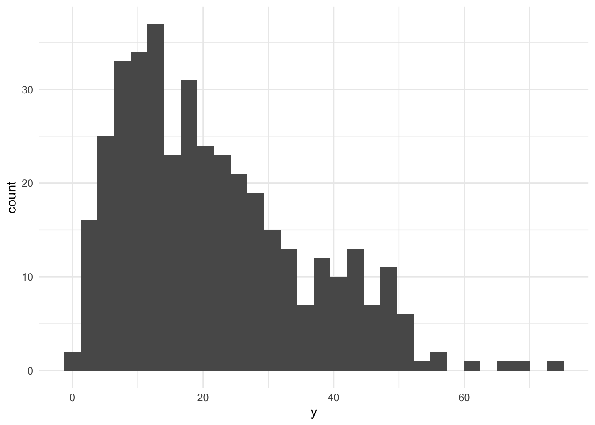
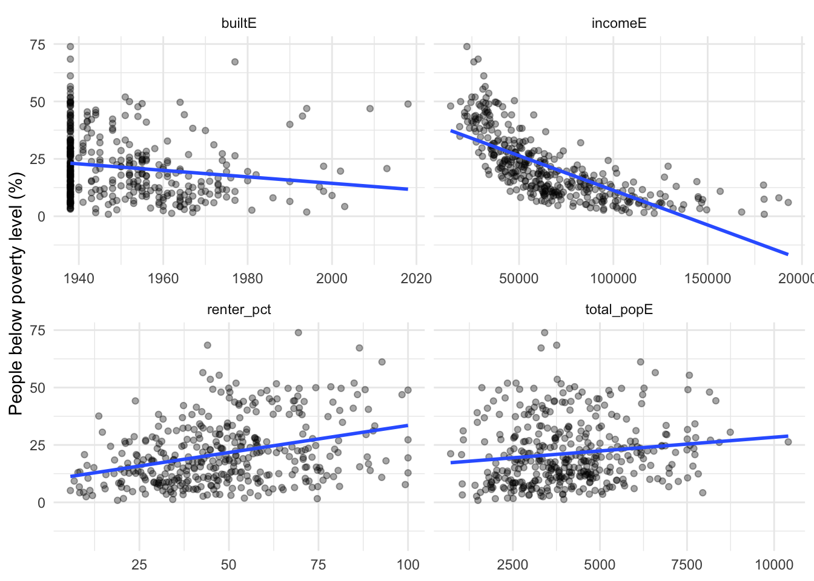
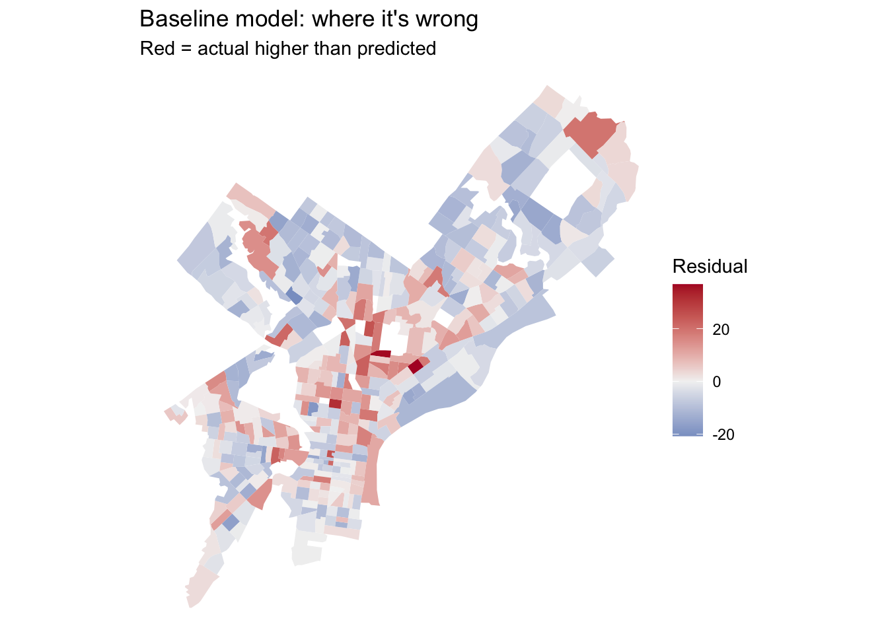
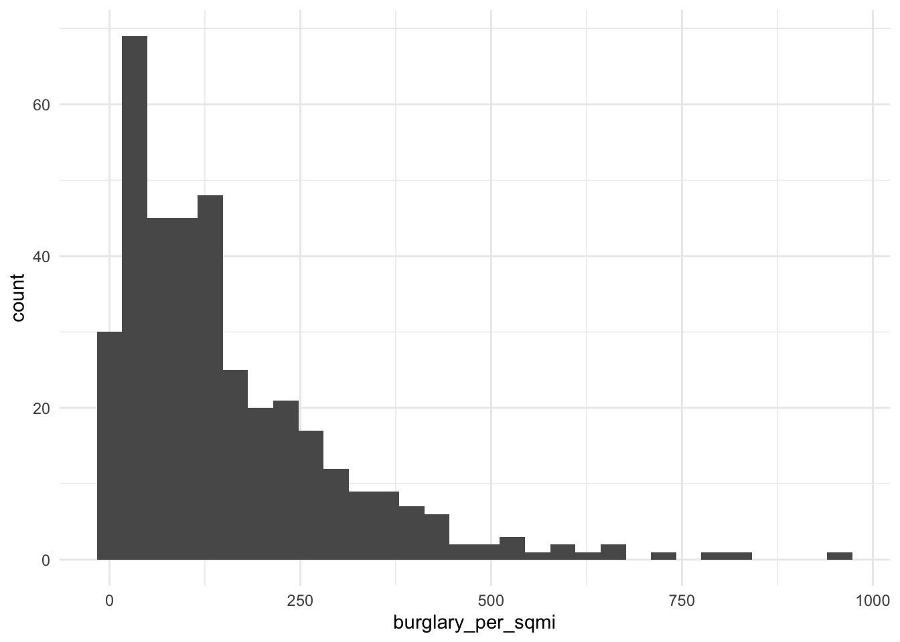
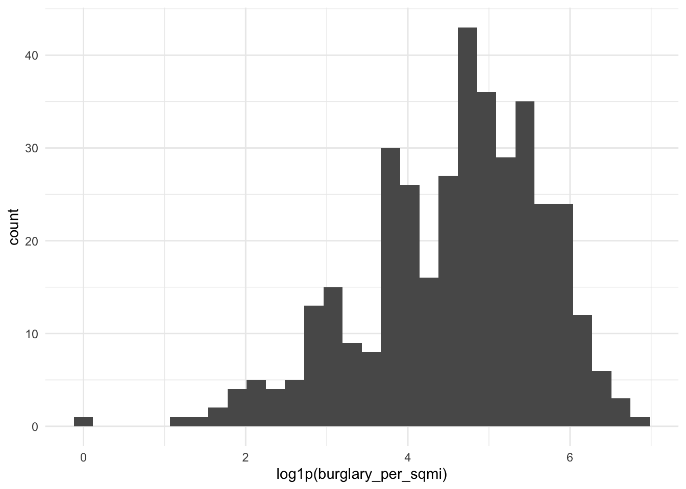
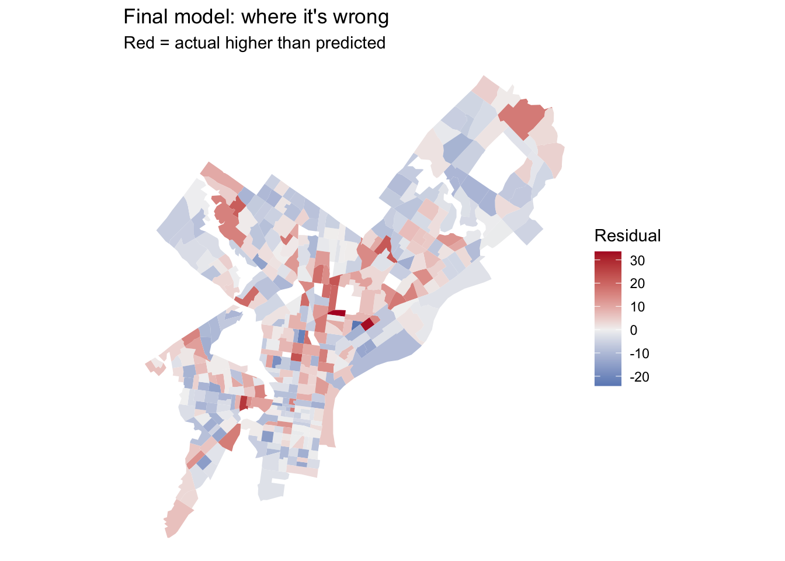
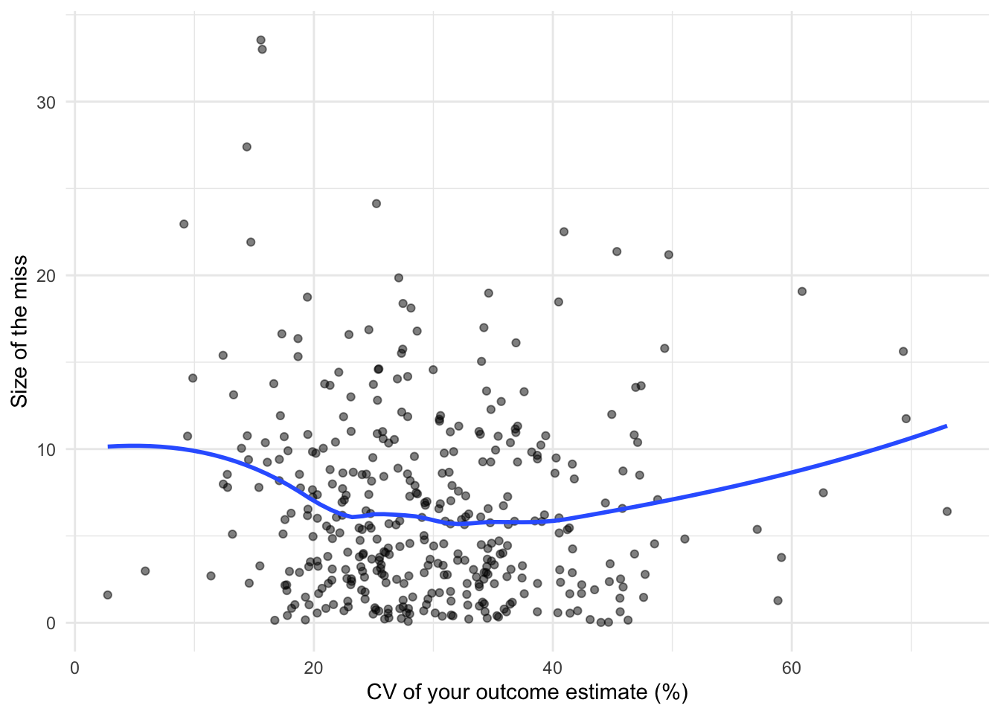

Code
library(tidyverse)
library(tidycensus)
library(sf)
library(caret)
Sys.getenv("CENSUS_API_KEY") != "" # should print TRUE[1] TRUEMUSA 5080 · Integrates Weeks 1–5 · Due Friday, October 16
Frederick Abalo
This is not a competition. There’s no leaderboard and no target RMSE. The goal is to practice the full prediction workflow on a question you choose, and to find out what actually helps. Some features you’re sure will help won’t, and some you add on a whim will. Both are findings.
You’ll:
Timing. Parts 1–4 use only what we’ve covered through Week 5. You can finish them before the October 9 lecture. Part 5 is new material; the lecture explains it, and the instructions below give you the essentials.
Type the code yourself. The worked examples show the pattern. Your job is to apply it to your outcome and your data choices.
Every model is cross-validated on the same tracts with the same folds, so the rows in your model log are comparable. If a new variable has missing values, fill them (for example, 0 for a count, or the median with a note) or choose a different variable. The cv_rmse() helper below will stop and tell you if you break this rule.
Your outcome comes from the 2019–2023 ACS. Pull open data from 2023 or earlier (2021–2023 is ideal). Using 2025 data to predict a 2023 outcome uses information from the future, which a real prediction model would never have.
Don’t use any variable that’s built from your outcome or measures the same thing another way. Ask yourself: would an agency trying to predict this outcome for a tract have this variable? If the answer is “only because it’s basically the outcome,” leave it out.
[1] TRUEThis function runs 10-fold cross-validation with the same seed every time, so every model in your log is tested on the same folds. You don’t need to change it. Read it once so you know what it does.
ctrl <- trainControl(method = "cv", number = 10)
cv_rmse <- function(formula, data) {
df <- if (inherits(data, "sf")) st_drop_geometry(data) else data
vars <- all.vars(formula)
bad <- vars[sapply(vars, function(v) any(is.na(df[[v]])))]
if (length(bad) > 0) {
stop("These variables have NAs: ", paste(bad, collapse = ", "),
". Fill them or choose another variable (Rule 1: don't drop rows).")
}
set.seed(5080)
fit <- train(formula, data = df, method = "lm", trControl = ctrl)
fit$results$RMSE
}Every time you fit a new model, add a row. By the end, this table is the story of your assignment.
Pick a tract-level ACS variable for Philadelphia that matters for policy. Two outcomes are off limits: median gross rent (we did it in lab) and median home value (save it for A4).
Some ideas if you’re stuck:
| Outcome | Why an agency might care | ACS table |
|---|---|---|
| % of households with no vehicle | Transit planning | B08201 or B25044 |
| Mean travel time to work | Access to jobs | B08013_001 ÷ B08303_001 |
| % of people below poverty | Targeting services | B17001 |
| % of housing units vacant | Housing and blight | B25002 |
| % of households overcrowded | Housing conditions | B25014 |
Use load_variables(2023, "acs5") to browse and find exact variable codes.
Choose three to five ACS predictors for your baseline model. They should be things that plausibly relate to your outcome, but none of them may be built from your outcome (Rule 3).
philly_tracts <- get_acs(
geography = "tract",
state = "PA",
county = "Philadelphia",
variables = c(
total_pop = "B01003_001",
below_poverty = "B17001_002",
poverty_universe = "B17001_001",
income = "B19013_001",
built = "B25035_001",
occupied = "B25003_001",
renter = "B25003_003"
),
year = 2023,
output = "wide",
geometry = TRUE,
progress_bar = FALSE
) %>%
st_transform(2272)Before you commit, check three things.
[1] 19 Min. 1st Qu. Median Mean 3rd Qu. Max. NAs
2.74 22.51 28.04 29.76 35.23 93.38 20 reliability n
1 High 7
2 Low 59
3 Moderate 322
4 Unavailable 20
If more than about a third of tracts have low reliability, consider a different outcome, or one built from larger counts. Write your reasoning either way.
Answer (2–3 sentences): What is your outcome, why would an agency want to predict it, and how reliable is it?
I model the percentage of people below the poverty level among those with poverty status determined in each Philadelphia tract, which can help agencies understand where service needs may be concentrated. Reliability improved compared with vacancy: 59 of 408 tracts (14.5%) are low reliability, below the assignment’s one-third warning; 20 have unavailable CVs. I use poverty as the outcome but still treat individual tract estimates cautiously.
Filter once, here, and never again. Every later step uses tracts.
[1] 408[1] 380Answer: How many tracts did you lose, and what kinds of places are they?
The run retained 380 of the 408 ACS tracts, excluding 28 for zero population, unavailable outcome reliability, or missing predictor values. These exclusions reflect data availability and should not be assumed to be a random subset of Philadelphia neighborhoods.
Plot your outcome against each predictor before modeling (the Week 3 habit).
predictors <- c("incomeE", "builtE", "renter_pct", "total_popE")
tracts %>% st_drop_geometry() %>%
select(y, all_of(predictors)) %>%
pivot_longer(-y, names_to = "predictor", values_to = "value") %>%
ggplot(aes(value, y)) + geom_point(alpha = 0.35) +
geom_smooth(method = "lm", se = FALSE) +
facet_wrap(~predictor, scales = "free_x") + theme_minimal() +
labs(x = NULL, y = "People below poverty level (%)")
Call:
lm(formula = f1, data = tracts)
Residuals:
Min 1Q Median 3Q Max
-20.719 -6.836 -0.967 4.973 36.792
Coefficients:
Estimate Std. Error t value Pr(>|t|)
(Intercept) 1.687e+02 6.294e+01 2.681 0.00766 **
incomeE -2.715e-04 1.632e-05 -16.630 < 2e-16 ***
builtE -7.031e-02 3.259e-02 -2.158 0.03159 *
renter_pct 1.428e-01 2.642e-02 5.406 1.15e-07 ***
total_popE 2.296e-04 3.169e-04 0.724 0.46925
---
Signif. codes: 0 '***' 0.001 '**' 0.01 '*' 0.05 '.' 0.1 ' ' 1
Residual standard error: 9.422 on 375 degrees of freedom
Multiple R-squared: 0.5479, Adjusted R-squared: 0.5431
F-statistic: 113.6 on 4 and 375 DF, p-value: < 2.2e-16# A tibble: 1 × 4
model added cv_rmse notes
<chr> <chr> <dbl> <chr>
1 m1 ACS baseline 9.46 Income, median year built, renter share, populationAnswer: On held-out tracts, the baseline model misses the poverty-rate estimate by about 9.46 percentage points on average (RMSE).
Save this map. You’ll compare it to your final model’s map in Part 6.
tracts <- tracts %>% mutate(resid_m1 = residuals(m1))
ggplot(tracts) +
geom_sf(aes(fill = resid_m1), color = NA) +
scale_fill_gradient2(low = "#2166ac", mid = "grey95", high = "#b2182b", midpoint = 0) +
theme_void() +
labs(title = "Baseline model: where it's wrong",
subtitle = "Red = actual higher than predicted",
fill = "Residual")
Answer: Where do the residuals cluster? What might those places have in common that your model doesn’t know about? Use this answer to choose your open data layers in Part 3.
The baseline map has clusters of red tracts where the poverty rate is higher than predicted and blue clusters where it is lower. This suggests the ACS predictors miss local conditions. I test historical residential burglary and shooting-victim records as added context; a predictive association would not show that crime causes poverty.
Many of the city’s datasets on OpenDataPhilly are served through a Carto SQL API. You send a SQL query in a URL, and it sends back data. Ask for format=GeoJSON and st_read() reads the result directly, just like the Indego feed in Week 4.
The pattern:
https://phl.carto.com/api/v2/sql?format=GeoJSON&q=SELECT ... FROM table_name WHERE ...Three pieces of SQL are all you need:
SELECT the_geom, column1, column2 chooses which columns come back. Always include the_geom, or you get no geometry.FROM table_name chooses the dataset.WHERE ... filters rows. Filter in the query, not in R. Some tables have millions of rows, and pulling everything will be slow or fail.This helper builds the URL for you. Spaces and symbols in a URL need encoding, and URLencode() handles that.
On a dataset’s OpenDataPhilly page, look for the API link. The table name is the word after FROM in the example query. To see what values a column takes before you filter on it, ask for a count in CSV format:
# What kinds of crime are in the incidents table in 2023?
url <- paste0("https://phl.carto.com/api/v2/sql?format=csv&q=",
URLencode("SELECT text_general_code, COUNT(*) AS n
FROM incidents_part1_part2
WHERE dispatch_date >= '2023-01-01' AND dispatch_date < '2024-01-01'
GROUP BY text_general_code ORDER BY n DESC"))
read_csv(url)# A tibble: 32 × 2
text_general_code n
<chr> <dbl>
1 Thefts 37054
2 Other Assaults 25986
3 Motor Vehicle Theft 22478
4 Vandalism/Criminal Mischief 17346
5 All Other Offenses 13334
6 Theft from Vehicle 13002
7 Fraud 7661
8 Aggravated Assault No Firearm 5134
9 Burglary Residential 3800
10 Aggravated Assault Firearm 3320
# ℹ 22 more rowsburglary <- carto_get(
"SELECT the_geom, text_general_code, dispatch_date
FROM incidents_part1_part2
WHERE dispatch_date >= '2023-01-01' AND dispatch_date < '2024-01-01'
AND text_general_code = 'Burglary Residential'"
) %>%
st_transform(st_crs(tracts)) # Carto returns EPSG 4326; translate immediately
nrow(burglary)[1] 3800Some records have no location. Drop them with filter(!st_is_empty(burglary)), and count how many you lost. Every point you drop is a point that won’t be counted.
These tables were available on Carto as of this fall. If a query fails, check the dataset’s OpenDataPhilly page for the current table name.
| Data | Table | Filter on | Notes |
|---|---|---|---|
| Crime incidents | incidents_part1_part2 |
dispatch_date, text_general_code |
Pick specific offense types |
| Shooting victims | shootings |
date_ |
Small enough to pull several years |
| 311 requests | public_cases_fc |
requested_datetime, service_name |
Use the count query above to see service names |
| Indego stations | (not Carto) https://www.rideindego.com/stations/json/ |
— | The Week 4 feed |
Datasets not on Carto often have a GeoJSON download link on their OpenDataPhilly page. st_read() reads those URLs too. For example, navigage to https://opendataphilly.org/, find a dataset that you’d like to import. I found city landmarks. On the page there is a link to a GeoJSON file. I simply right-clicked on that hyperlink and copied it and then used st_read() and pasted the link:
landmarks <- st_read(“https://hub.arcgis.com/api/v3/datasets/6b2fe4a0fbe14e0a8e6afceaea230b8e_0/downloads/data?format=geojson&spatialRefId=4326&where=1%3D1”)
Pull at least two layers that you think relate to your outcome. Base your choice on your Part 2C answer.
layer1 <- carto_get(
"SELECT the_geom, dispatch_date_time, text_general_code
FROM incidents_part1_part2
WHERE dispatch_date_time >= '2021-01-01'
AND dispatch_date_time < '2024-01-01'
AND text_general_code = 'Burglary Residential'"
) %>%
st_transform(st_crs(tracts))
layer2 <- carto_get(
"SELECT the_geom, date_
FROM shootings
WHERE date_ >= '2021-01-01' AND date_ < '2024-01-01'"
) %>% st_transform(st_crs(tracts))
geometry_check <- tibble(
layer = c("Residential burglary", "Shooting-victim records"),
downloaded = c(nrow(layer1), nrow(layer2)),
empty_geometry = c(sum(st_is_empty(layer1)), sum(st_is_empty(layer2)))
)
geometry_check# A tibble: 2 × 3
layer downloaded empty_geometry
<chr> <int> <int>
1 Residential burglary 11238 133
2 Shooting-victim records 6282 2Answer: Why these layers? What do you expect them to capture that the ACS variables don’t?
These layers capture recorded neighborhood safety conditions not represented by the four ACS predictors. Burglary and shooting records are imperfect measures of neighborhood context (and shooting rows represent victims, not necessarily unique incidents); I use them as predictors, not as causal explanations of poverty.
Every feature below reuses a Week 4 tool. The worked examples use burglaries and Indego stations; you build the same types from your own layers.
How many burglaries fall in each tract?
Min. 1st Qu. Median Mean 3rd Qu. Max.
0.00 13.00 22.00 28.34 38.00 146.00 A tract with no burglaries gets 0, not NA, so Rule 1 is safe.
Raw counts mostly measure tract size. A big tract has more of everything. Normalize by area, by population, or by housing units, depending on what makes sense for the thing you’re counting.
If a tract has 40 residents and 3 burglaries, its rate is 75 per 1,000, which is a huge number built on tiny counts. Look at the tracts with the highest per-capita rates before you trust them. This is the Week 3 lesson about small denominators again.
How far is each tract from its nearest Indego station? Use the Week 4 pattern: find the nearest feature, then measure to it element by element.
Sometimes the “thing” is a single location, such as City Hall as a stand-in for the center of the regional economy.
Build at least three spatial features from your own layers, and use at least two types (count, density, nearest distance, distance to a place). After each one, fit a model, cross-validate it, and log it.
tracts <- tracts %>%
mutate(dist_ch_mi = as.numeric(st_distance(tract_pts, city_hall)) / 5280)
f2 <- update(f1, . ~ . + burglary_per_sqmi)
model_log <- model_log %>% add_row(
model = "m2", added = "Burglary records per square mile",
cv_rmse = cv_rmse(f2, tracts), notes = "Improved over ACS baseline")
f3 <- update(f2, . ~ . + shootings_per_sqmi)
model_log <- model_log %>% add_row(
model = "m3", added = "Shooting-victim records per square mile",
cv_rmse = cv_rmse(f3, tracts), notes = "Small additional improvement")
f4 <- update(f3, . ~ . + dist_burglary_mi)
model_log <- model_log %>% add_row(
model = "m4", added = "Distance to nearest burglary record",
cv_rmse = cv_rmse(f4, tracts), notes = "Little change from m3")
model_log# A tibble: 4 × 4
model added cv_rmse notes
<chr> <chr> <dbl> <chr>
1 m1 ACS baseline 9.46 Income, median year bui…
2 m2 Burglary records per square mile 9.34 Improved over ACS basel…
3 m3 Shooting-victim records per square mile 9.07 Small additional improv…
4 m4 Distance to nearest burglary record 9.10 Little change from m3 Answer: Which spatial feature helped most? Did any feature you expected to help do nothing, or make CV RMSE worse? Why might that be?
Burglary density lowered RMSE from 9.46 to 9.34; adding shooting-victim density reduced it further to 9.07. Nearest-burglary distance slightly worsened it to 9.10, perhaps because it overlaps with density or is a weak proxy for poverty-related conditions. These are modest predictive changes, not causal effects.
Watch the October 9 recorded lecture before you start this part. Below is a summary to work from.
So far, every predictor has entered the model as a straight line: each additional unit of X changes predicted Y by the same amount, everywhere. Transformations let the model bend. For prediction, the question is simply does the bend lower CV RMSE? For interpretation, each transformation changes what a coefficient means, so you need to know how to read it.
Keep your outcome y untransformed in this assignment. If you model log(y), your CV RMSE comes out in log units and can’t be compared to the other rows in your log. (Predicting a logged outcome well requires back-transforming, which is an A4 topic.)
Many urban variables are skewed: a few tracts have huge values, and most have small ones. Income, density, and counts are typical. A log compresses the long tail, so a model can use the difference between 1 and 10 as well as the difference between 100 and 1,000.


log(0) is -Inf, and it will break your model. Counts and densities often include zeros. Use log1p(x), which computes log(x + 1), for anything that can be 0.
Reading the coefficient: when a predictor is logged, a 1% increase in X goes with a change of about β/100 in Y, in Y’s units. With log1p, this reading is approximate for small values of X.
If your scatterplot bends (rising and then flattening, or falling and then rising), a squared term lets the line curve. Write it with I(), which tells R to do the arithmetic rather than read ^ as formula syntax.
Call:
lm(formula = y ~ dist_ch_mi + I(dist_ch_mi^2), data = tracts)
Residuals:
Min 1Q Median 3Q Max
-21.993 -10.509 -1.953 7.479 49.777
Coefficients:
Estimate Std. Error t value Pr(>|t|)
(Intercept) 18.48514 1.83673 10.064 < 2e-16 ***
dist_ch_mi 2.40774 0.66701 3.610 0.000348 ***
I(dist_ch_mi^2) -0.25355 0.05007 -5.064 6.42e-07 ***
---
Signif. codes: 0 '***' 0.001 '**' 0.01 '*' 0.05 '.' 0.1 ' ' 1
Residual standard error: 13.26 on 377 degrees of freedom
Multiple R-squared: 0.09952, Adjusted R-squared: 0.09474
F-statistic: 20.83 on 2 and 377 DF, p-value: 2.619e-09Reading the coefficient: you can’t read either coefficient alone anymore. The effect of X depends on where you are along X. A positive linear term with a negative squared term means Y rises with X and then levels off or turns down. Plot the fitted curve to see it:
Sometimes a number works better as groups, either because the relationship isn’t smooth or because the categories are meaningful. You can make categories from any variable with case_when() or cut(), and then make sure R treats them as a factor.
ring n
1 Core 79
2 Inner 134
3 Outer 167
Call:
lm(formula = y ~ ring, data = tracts)
Residuals:
Min 1Q Median 3Q Max
-23.701 -9.489 -2.045 6.774 50.600
Coefficients:
Estimate Std. Error t value Pr(>|t|)
(Intercept) 16.631 1.457 11.413 < 2e-16 ***
ringInner 11.748 1.837 6.394 4.77e-10 ***
ringOuter 1.243 1.769 0.703 0.483
---
Signif. codes: 0 '***' 0.001 '**' 0.01 '*' 0.05 '.' 0.1 ' ' 1
Residual standard error: 12.95 on 377 degrees of freedom
Multiple R-squared: 0.1412, Adjusted R-squared: 0.1366
F-statistic: 30.99 on 2 and 377 DF, p-value: 3.462e-13Reading the coefficients: R turns a factor with k categories into k − 1 dummy variables. The category left out is the reference level (here, “Core,” the first level). Each coefficient is the difference from the reference: ringOuter is how much higher or lower predicted Y is in outer tracts compared to core tracts, holding everything else in the model constant. To change the reference, use relevel(ring, ref = "Outer").
If a category has only a handful of tracts, its coefficient is unstable, and in cross-validation some folds may not contain it at all. Aim for at least 20 tracts per category.
Try at least one of each: a log, a squared term, and a categorical variable. Choose which variables to transform based on your plots, not at random. Log each model.
f_log <- y ~ incomeE + builtE + renter_pct + total_popE +
log1p(burglary_per_sqmi) + shootings_per_sqmi + dist_burglary_mi
f_square <- update(f4, . ~ . + I(dist_burglary_mi^2))
f_category <- y ~ incomeE + builtE + renter_pct + total_popE +
burglary_per_sqmi + shootings_per_sqmi + ring
model_log <- model_log %>%
add_row(model = "m5", added = "log1p burglary density",
cv_rmse = cv_rmse(f_log, tracts), notes = "Compresses right tail") %>%
add_row(model = "m6", added = "Squared nearest-burglary distance",
cv_rmse = cv_rmse(f_square, tracts), notes = "Allows curvature") %>%
add_row(model = "m7", added = "Core/Inner/Outer distance category",
cv_rmse = cv_rmse(f_category, tracts), notes = "Reference: Core")
model_log# A tibble: 7 × 4
model added cv_rmse notes
<chr> <chr> <dbl> <chr>
1 m1 ACS baseline 9.46 Income, median year bui…
2 m2 Burglary records per square mile 9.34 Improved over ACS basel…
3 m3 Shooting-victim records per square mile 9.07 Small additional improv…
4 m4 Distance to nearest burglary record 9.10 Little change from m3
5 m5 log1p burglary density 9.05 Compresses right tail
6 m6 Squared nearest-burglary distance 9.11 Allows curvature
7 m7 Core/Inner/Outer distance category 8.98 Reference: Core Answer: Which transformation helped most? For your categorical variable, write one sentence reading one of its coefficients correctly, naming the reference level.
The Core/Inner/Outer distance category performed best (m7, RMSE 8.98), narrowly beating the log-density model (9.05). Core is the reference; holding other predictors fixed, the final model’s ringOuter coefficient (−4.62) means Outer tracts are predicted to have poverty rates 4.62 percentage points lower than Core tracts. This is a model association, not a causal effect.
Combine the features and transformations that earned their place, judged by CV RMSE, not p-values.
Call:
lm(formula = f_final, data = tracts)
Residuals:
Min 1Q Median 3Q Max
-24.130 -6.021 -0.719 3.975 33.547
Coefficients:
Estimate Std. Error t value Pr(>|t|)
(Intercept) 3.382e+01 6.481e+01 0.522 0.60213
incomeE -2.520e-04 1.834e-05 -13.738 < 2e-16 ***
builtE -4.095e-04 3.330e-02 -0.012 0.99020
renter_pct 8.519e-02 2.828e-02 3.012 0.00277 **
total_popE 4.149e-04 2.919e-04 1.421 0.15609
burglary_per_sqmi -2.911e-03 3.995e-03 -0.729 0.46668
shootings_per_sqmi 2.796e-02 4.271e-03 6.547 1.96e-10 ***
ringInner -1.657e+00 1.532e+00 -1.081 0.28020
ringOuter -4.616e+00 1.566e+00 -2.948 0.00340 **
---
Signif. codes: 0 '***' 0.001 '**' 0.01 '*' 0.05 '.' 0.1 ' ' 1
Residual standard error: 8.646 on 371 degrees of freedom
Multiple R-squared: 0.6234, Adjusted R-squared: 0.6153
F-statistic: 76.76 on 8 and 371 DF, p-value: < 2.2e-16# A tibble: 8 × 4
model added cv_rmse notes
<chr> <chr> <dbl> <chr>
1 m1 ACS baseline 9.46 Income, median yea…
2 m2 Burglary records per square mile 9.34 Improved over ACS …
3 m3 Shooting-victim records per square mile 9.07 Small additional i…
4 m4 Distance to nearest burglary record 9.10 Little change from…
5 m5 log1p burglary density 9.05 Compresses right t…
6 m6 Squared nearest-burglary distance 9.11 Allows curvature
7 m7 Core/Inner/Outer distance category 8.98 Reference: Core
8 final Selected m7: ACS + densities + distance ring 8.98 Lowest 10-fold CV …To read a fitted value as ŷ, compare predictions for two actual tracts. These examples are representative tracts near each ring’s median observed poverty rate.
prediction_examples <- bind_rows(
tracts %>% filter(ring == "Core") %>%
slice_min(abs(y - median(y)), n = 1),
tracts %>% filter(ring == "Outer") %>%
slice_min(abs(y - median(y)), n = 1)
) %>%
mutate(predicted_poverty_pct = predict(m_final, newdata = .)) %>%
st_drop_geometry() %>%
select(GEOID, ring, observed_poverty_pct = y, predicted_poverty_pct)
prediction_examples GEOID ring observed_poverty_pct predicted_poverty_pct
1 42101001301 Core 13.02876 2.643981
2 42101021000 Outer 15.62432 12.395728tracts <- tracts %>% mutate(resid_final = residuals(m_final))
ggplot(tracts) +
geom_sf(aes(fill = resid_final), color = NA) +
scale_fill_gradient2(low = "#2166ac", mid = "grey95", high = "#b2182b", midpoint = 0) +
theme_void() +
labs(title = "Final model: where it's wrong",
subtitle = "Red = actual higher than predicted",
fill = "Residual")
Put your two residual maps side by side, or put them next to each other in the rendered document. Did the clusters from Part 2C shrink? Where did they stay?
Answer: The final map still shows clusters of over- and under-prediction. Some central tracts remain positive (poverty higher than predicted), while neighboring negative residuals remain in northern areas. The added features improve average prediction, but do not remove the spatial pattern.

The smoother is relatively flat through much of the middle CV range, then rises at higher CV values. Less reliable estimates can coincide with larger misses, but the pattern is noisy and does not separate sampling uncertainty from other prediction error.
Answer in prose, drawing on your model log (incorporate our words of the day for bonus points. just kidding):
The ACS baseline had a 10-fold CV RMSE of 9.46 percentage points. Burglary density improved it modestly to 9.34, and shooting-victim density lowered it to 9.07. Nearest-burglary distance raised RMSE slightly to 9.10, so it did not help in this run; it may overlap with density or poorly represent poverty-related conditions. The log-density model scored 9.05, the squared-distance model 9.11, and the Core/Inner/Outer category 8.98. The categorical model performed best, though its advantage over the log model is small and the distance cutoffs are only one possible grouping.
In the final model, the ringOuter coefficient is −4.62. Holding income, housing age, renter share, population, and incident densities fixed, an Outer tract is predicted to have a poverty rate 4.62 percentage points lower than a Core tract. For an ŷ reading, the example Core tract (GEOID 42101001301) has a fitted poverty rate of 2.64%, while the example Outer tract (GEOID 42101021000) has a fitted rate of 12.40%. The Core example’s observed estimate is 13.03%, illustrating that a fitted value can still miss substantially.
The residual map still shows clusters of over- and under-prediction, especially in central and northern parts of the city. A useful next feature could measure access to jobs or commute times, using ACS commuting tables or a job-accessibility dataset, because the current model has no direct measure of economic opportunity. In the CV-versus-absolute-residual plot, the smoother rises at higher CV values, suggesting less reliable estimates can coincide with larger misses, though the pattern is noisy. The plot cannot tell us what share of error is sampling uncertainty: residuals also reflect omitted predictors, measurement error, and model form. Poverty now passes the assignment’s one-third low-reliability screen, but many estimates remain moderately reliable rather than precise. I would use the model to explore broad patterns, not to make high-stakes decisions about individual tracts.
---
title: "Assignment: Building Features, Watching What Happens"
subtitle: "MUSA 5080 · Integrates Weeks 1–5 · Due Friday, October 16"
author: "Frederick Abalo"
format:
html:
toc: true
code-fold: show
code-tools: true
execute:
warning: false
message: false
freeze: false
---
## What this assignment is (and isn't)
This is **not a competition.** There's no leaderboard and no target RMSE. The goal is to practice the full prediction workflow on a question you choose, and to **find out what actually helps.** Some features you're sure will help won't, and some you add on a whim will. Both are findings.
You'll:
1. Choose a tract-level outcome for Philadelphia and check whether it's reliable enough to model (Weeks 2–3).
2. Fit a baseline model and cross-validate it (Week 5).
3. Pull data from Philadelphia's open data portal through its API and build spatial features: counts, densities, and distances (Week 4, plus one new tool).
4. Transform variables with logs, squared terms, and categories. **Watch the October 9 recorded lecture before Part 5.**
5. Keep a **model log** the whole way through, and compare where your first and final models go wrong.
**Timing.** Parts 1–4 use only what we've covered through Week 5. You can finish them before the October 9 lecture. Part 5 is new material; the lecture explains it, and the instructions below give you the essentials.
**Type the code yourself.** The worked examples show the pattern. Your job is to apply it to your outcome and your data choices.
### Three rules that apply everywhere
::: {.callout-important}
## 1. Don't drop rows
Every model is cross-validated on the same tracts with the same folds, so the rows in your model log are comparable. If a new variable has missing values, fill them (for example, 0 for a count, or the median with a note) or choose a different variable. The `cv_rmse()` helper below will stop and tell you if you break this rule.
## 2. Stay inside the time window
Your outcome comes from the 2019–2023 ACS. Pull open data from **2023 or earlier** (2021–2023 is ideal). Using 2025 data to predict a 2023 outcome uses information from the future, which a real prediction model would never have.
## 3. No leakage
Don't use any variable that's built from your outcome or measures the same thing another way. Ask yourself: *would an agency trying to predict this outcome for a tract have this variable?* If the answer is "only because it's basically the outcome," leave it out.
:::
---
## Part 0: Setup
```{r}
#| label: setup
library(tidyverse)
library(tidycensus)
library(sf)
library(caret)
Sys.getenv("CENSUS_API_KEY") != "" # should print TRUE
```
### The cross-validation helper
This function runs 10-fold cross-validation with the same seed every time, so every model in your log is tested on the same folds. **You don't need to change it.** Read it once so you know what it does.
```{r}
#| label: cv-helper
ctrl <- trainControl(method = "cv", number = 10)
cv_rmse <- function(formula, data) {
df <- if (inherits(data, "sf")) st_drop_geometry(data) else data
vars <- all.vars(formula)
bad <- vars[sapply(vars, function(v) any(is.na(df[[v]])))]
if (length(bad) > 0) {
stop("These variables have NAs: ", paste(bad, collapse = ", "),
". Fill them or choose another variable (Rule 1: don't drop rows).")
}
set.seed(5080)
fit <- train(formula, data = df, method = "lm", trControl = ctrl)
fit$results$RMSE
}
```
### The model log
Every time you fit a new model, add a row. By the end, this table is the story of your assignment.
```{r}
#| label: log-start
model_log <- tibble(
model = character(),
added = character(),
cv_rmse = numeric(),
notes = character()
)
```
---
## Part 1: Choose your outcome
Pick a **tract-level ACS variable for Philadelphia** that matters for policy. Two outcomes are off limits: median gross rent (we did it in lab) and median home value (save it for A4).
Some ideas if you're stuck:
| Outcome | Why an agency might care | ACS table |
|---|---|---|
| % of households with no vehicle | Transit planning | B08201 or B25044 |
| Mean travel time to work | Access to jobs | B08013_001 ÷ B08303_001 |
| % of people below poverty | Targeting services | B17001 |
| % of housing units vacant | Housing and blight | B25002 |
| % of households overcrowded | Housing conditions | B25014 |
Use `load_variables(2023, "acs5")` to browse and find exact variable codes.
### 1A: Pull your outcome and your baseline predictors
Choose **three to five ACS predictors** for your baseline model. They should be things that plausibly relate to your outcome, but **none of them may be built from your outcome** (Rule 3).
```{r}
#| label: pull
#| message: false
#| warning: false
#| results: hide
philly_tracts <- get_acs(
geography = "tract",
state = "PA",
county = "Philadelphia",
variables = c(
total_pop = "B01003_001",
below_poverty = "B17001_002",
poverty_universe = "B17001_001",
income = "B19013_001",
built = "B25035_001",
occupied = "B25003_001",
renter = "B25003_003"
),
year = 2023,
output = "wide",
geometry = TRUE,
progress_bar = FALSE
) %>%
st_transform(2272)
```
```{r}
#| label: build-outcome
philly_tracts <- philly_tracts %>%
mutate(
y = 100 * below_povertyE / poverty_universeE,
y_moe = 100 * moe_prop(
below_povertyE, poverty_universeE, below_povertyM, poverty_universeM
),
y_cv = if_else(y > 0, (y_moe / 1.645) / y * 100, NA_real_),
renter_pct = 100 * renterE / occupiedE
)
```
### 1B: Is it reliable enough to model?
Before you commit, check three things.
```{r}
#| label: reliability
# How many tracts have no value for your outcome?
sum(is.na(philly_tracts$y))
# How reliable is it?
summary(philly_tracts$y_cv)
philly_tracts %>%
mutate(reliability = case_when(
is.na(y_cv) ~ "Unavailable",
y_cv < 12 ~ "High",
y_cv <= 40 ~ "Moderate",
TRUE ~ "Low"
)) %>%
st_drop_geometry() %>%
count(reliability)
# What does the distribution look like?
ggplot(philly_tracts, aes(x = y)) +
geom_histogram(bins = 30) +
theme_minimal()
```
If more than about a third of tracts have low reliability, consider a different outcome, or one built from larger counts. Write your reasoning either way.
**Answer (2–3 sentences):** What is your outcome, why would an agency want to predict it, and how reliable is it?
I model the percentage of people below the poverty level among those with poverty status determined in each Philadelphia tract, which can help agencies understand where service needs may be concentrated. Reliability improved compared with vacancy: 59 of 408 tracts (14.5%) are low reliability, below the assignment's one-third warning; 20 have unavailable CVs. I use poverty as the outcome but still treat individual tract estimates cautiously.
### 1C: Decide which tracts to model
Filter once, here, and never again. Every later step uses `tracts`.
```{r}
#| label: filter
tracts <- philly_tracts %>%
filter(total_popE > 0,
is.finite(y), is.finite(y_cv), is.finite(incomeE),
is.finite(builtE), is.finite(renter_pct)
)
nrow(philly_tracts)
nrow(tracts)
```
**Answer:** How many tracts did you lose, and what kinds of places are they?
The run retained 380 of the 408 ACS tracts, excluding 28 for zero population, unavailable outcome reliability, or missing predictor values. These exclusions reflect data availability and should not be assumed to be a random subset of Philadelphia neighborhoods.
---
## Part 2: Baseline model
### 2A: Look first
Plot your outcome against each predictor before modeling (the Week 3 habit).
```{r}
#| label: look
predictors <- c("incomeE", "builtE", "renter_pct", "total_popE")
tracts %>% st_drop_geometry() %>%
select(y, all_of(predictors)) %>%
pivot_longer(-y, names_to = "predictor", values_to = "value") %>%
ggplot(aes(value, y)) + geom_point(alpha = 0.35) +
geom_smooth(method = "lm", se = FALSE) +
facet_wrap(~predictor, scales = "free_x") + theme_minimal() +
labs(x = NULL, y = "People below poverty level (%)")
```
### 2B: Fit and log
```{r}
#| label: m1
f1 <- y ~ incomeE + builtE + renter_pct + total_popE
m1 <- lm(f1, data = tracts)
summary(m1)
model_log <- model_log %>%
add_row(model = "m1", added = "ACS baseline",
cv_rmse = cv_rmse(f1, tracts),
notes = "Income, median year built, renter share, population")
model_log
```
**Answer:** On held-out tracts, the baseline model misses the poverty-rate estimate by about 9.46 percentage points on average (RMSE).
### 2C: Where is the baseline wrong?
Save this map. You'll compare it to your final model's map in Part 6.
```{r}
#| label: resid-map-1
tracts <- tracts %>% mutate(resid_m1 = residuals(m1))
ggplot(tracts) +
geom_sf(aes(fill = resid_m1), color = NA) +
scale_fill_gradient2(low = "#2166ac", mid = "grey95", high = "#b2182b", midpoint = 0) +
theme_void() +
labs(title = "Baseline model: where it's wrong",
subtitle = "Red = actual higher than predicted",
fill = "Residual")
```
**Answer:** Where do the residuals cluster? What might those places have in common that your model doesn't know about? **Use this answer to choose your open data layers in Part 3.**
The baseline map has clusters of red tracts where the poverty rate is higher than predicted and blue clusters where it is lower. This suggests the ACS predictors miss local conditions. I test historical residential burglary and shooting-victim records as added context; a predictive association would not show that crime causes poverty.
---
## Part 3: Getting data from Philadelphia's open data portal
Many of the city's datasets on [OpenDataPhilly](https://opendataphilly.org) are served through a **Carto SQL API**. You send a SQL query in a URL, and it sends back data. Ask for `format=GeoJSON` and `st_read()` reads the result directly, just like the Indego feed in Week 4.
The pattern:
```
https://phl.carto.com/api/v2/sql?format=GeoJSON&q=SELECT ... FROM table_name WHERE ...
```
Three pieces of SQL are all you need:
- `SELECT the_geom, column1, column2` chooses which columns come back. **Always include `the_geom`**, or you get no geometry.
- `FROM table_name` chooses the dataset.
- `WHERE ...` filters rows. **Filter in the query, not in R.** Some tables have millions of rows, and pulling everything will be slow or fail.
This helper builds the URL for you. Spaces and symbols in a URL need encoding, and `URLencode()` handles that.
```{r}
#| label: carto-helper
carto_get <- function(sql) {
url <- paste0("https://phl.carto.com/api/v2/sql?format=GeoJSON&q=", URLencode(sql))
st_read(url, quiet = TRUE)
}
```
### Finding a table name
On a dataset's OpenDataPhilly page, look for the API link. The table name is the word after `FROM` in the example query. To see what values a column takes before you filter on it, ask for a count in CSV format:
```{r}
#| label: explore-values
# What kinds of crime are in the incidents table in 2023?
url <- paste0("https://phl.carto.com/api/v2/sql?format=csv&q=",
URLencode("SELECT text_general_code, COUNT(*) AS n
FROM incidents_part1_part2
WHERE dispatch_date >= '2023-01-01' AND dispatch_date < '2024-01-01'
GROUP BY text_general_code ORDER BY n DESC"))
read_csv(url)
```
### Worked example: residential burglaries in 2023
```{r}
#| label: worked-burglary
burglary <- carto_get(
"SELECT the_geom, text_general_code, dispatch_date
FROM incidents_part1_part2
WHERE dispatch_date >= '2023-01-01' AND dispatch_date < '2024-01-01'
AND text_general_code = 'Burglary Residential'"
) %>%
st_transform(st_crs(tracts)) # Carto returns EPSG 4326; translate immediately
nrow(burglary)
```
::: {.callout-warning}
## Check for missing geometry
Some records have no location. Drop them with `filter(!st_is_empty(burglary))`, and count how many you lost. Every point you drop is a point that won't be counted.
:::
### Other layers to try
These tables were available on Carto as of this fall. If a query fails, check the dataset's OpenDataPhilly page for the current table name.
| Data | Table | Filter on | Notes |
|---|---|---|---|
| Crime incidents | `incidents_part1_part2` | `dispatch_date`, `text_general_code` | Pick specific offense types |
| Shooting victims | `shootings` | `date_` | Small enough to pull several years |
| 311 requests | `public_cases_fc` | `requested_datetime`, `service_name` | Use the count query above to see service names |
| Indego stations | *(not Carto)* `https://www.rideindego.com/stations/json/` | — | The Week 4 feed |
Datasets not on Carto often have a GeoJSON download link on their OpenDataPhilly page. `st_read()` reads those URLs too.
For example, navigage to https://opendataphilly.org/, find a dataset that you'd like to import. I found city landmarks. On the page there is a link to a GeoJSON file. I simply right-clicked on that hyperlink and copied it and then used st_read() and pasted the link:
landmarks <- st_read("https://hub.arcgis.com/api/v3/datasets/6b2fe4a0fbe14e0a8e6afceaea230b8e_0/downloads/data?format=geojson&spatialRefId=4326&where=1%3D1")
### Your turn
Pull **at least two layers** that you think relate to your outcome. Base your choice on your Part 2C answer.
```{r}
#| label: my-layers
layer1 <- carto_get(
"SELECT the_geom, dispatch_date_time, text_general_code
FROM incidents_part1_part2
WHERE dispatch_date_time >= '2021-01-01'
AND dispatch_date_time < '2024-01-01'
AND text_general_code = 'Burglary Residential'"
) %>%
st_transform(st_crs(tracts))
layer2 <- carto_get(
"SELECT the_geom, date_
FROM shootings
WHERE date_ >= '2021-01-01' AND date_ < '2024-01-01'"
) %>% st_transform(st_crs(tracts))
geometry_check <- tibble(
layer = c("Residential burglary", "Shooting-victim records"),
downloaded = c(nrow(layer1), nrow(layer2)),
empty_geometry = c(sum(st_is_empty(layer1)), sum(st_is_empty(layer2)))
)
geometry_check
layer1 <- layer1 %>% filter(!st_is_empty(geometry))
layer2 <- layer2 %>% filter(!st_is_empty(geometry))
```
**Answer:** Why these layers? What do you expect them to capture that the ACS variables don't?
These layers capture recorded neighborhood safety conditions not represented by the four ACS predictors. Burglary and shooting records are imperfect measures of neighborhood context (and shooting rows represent victims, not necessarily unique incidents); I use them as predictors, not as causal explanations of poverty.
---
## Part 4: Building spatial features
Every feature below reuses a Week 4 tool. The worked examples use burglaries and Indego stations; you build the same types from your own layers.
### 4A: Counting
How many burglaries fall in each tract?
```{r}
#| label: count
tracts <- tracts %>%
mutate(
n_burglary = lengths(st_intersects(., layer1)),
n_shootings = lengths(st_intersects(., layer2))
)
summary(tracts$n_burglary)
```
A tract with no burglaries gets 0, not NA, so Rule 1 is safe.
### 4B: Density: don't skip this
Raw counts mostly measure **tract size**. A big tract has more of everything. Normalize by area, by population, or by housing units, depending on what makes sense for the thing you're counting.
```{r}
#| label: density
tracts <- tracts %>%
mutate(
area_sqmi = as.numeric(st_area(.)) / 27878400, # sq ft in a sq mile
burglary_per_sqmi = n_burglary / area_sqmi,
shootings_per_sqmi = n_shootings / area_sqmi
)
```
::: {.callout-note}
## Per capita in low-population tracts
If a tract has 40 residents and 3 burglaries, its rate is 75 per 1,000, which is a huge number built on tiny counts. Look at the tracts with the highest per-capita rates before you trust them. This is the Week 3 lesson about small denominators again.
:::
### 4C: Measuring distance to the nearest thing
How far is each tract from its nearest Indego station? Use the Week 4 pattern: find the nearest feature, then measure to it **element by element**.
```{r}
#| label: nearest
tract_pts <- st_point_on_surface(tracts) # always inside the tract, unlike a centroid
nearest_idx <- st_nearest_feature(tract_pts, layer1)
tracts <- tracts %>%
mutate(dist_burglary_mi = as.numeric(
st_distance(tract_pts, layer1[nearest_idx, ], by_element = TRUE)) / 5280)
```
### 4D: Measuring distance to one place
Sometimes the "thing" is a single location, such as City Hall as a stand-in for the center of the regional economy.
```{r}
#| label: city-hall
city_hall <- st_sfc(st_point(c(-75.1636, 39.9526)), crs = 4326) %>%
st_transform(st_crs(tracts))
tracts <- tracts %>%
mutate(dist_ch_mi = as.numeric(st_distance(tract_pts, city_hall)) / 5280)
```
### 4E: Your turn
Build **at least three spatial features** from your own layers, and use at least two types (count, density, nearest distance, distance to a place). After **each one**, fit a model, cross-validate it, and log it.
```{r}
#| label: my-spatial
tracts <- tracts %>%
mutate(dist_ch_mi = as.numeric(st_distance(tract_pts, city_hall)) / 5280)
f2 <- update(f1, . ~ . + burglary_per_sqmi)
model_log <- model_log %>% add_row(
model = "m2", added = "Burglary records per square mile",
cv_rmse = cv_rmse(f2, tracts), notes = "Improved over ACS baseline")
f3 <- update(f2, . ~ . + shootings_per_sqmi)
model_log <- model_log %>% add_row(
model = "m3", added = "Shooting-victim records per square mile",
cv_rmse = cv_rmse(f3, tracts), notes = "Small additional improvement")
f4 <- update(f3, . ~ . + dist_burglary_mi)
model_log <- model_log %>% add_row(
model = "m4", added = "Distance to nearest burglary record",
cv_rmse = cv_rmse(f4, tracts), notes = "Little change from m3")
model_log
```
**Answer:** Which spatial feature helped most? Did any feature you expected to help do nothing, or make CV RMSE worse? Why might that be?
Burglary density lowered RMSE from 9.46 to 9.34; adding shooting-victim density reduced it further to 9.07. Nearest-burglary distance slightly worsened it to 9.10, perhaps because it overlaps with density or is a weak proxy for poverty-related conditions. These are modest predictive changes, not causal effects.
---
## Part 5: Transforming features
**Watch the October 9 recorded lecture before you start this part.** Below is a summary to work from.
So far, every predictor has entered the model as a straight line: each additional unit of X changes predicted Y by the same amount, everywhere. Transformations let the model bend. For prediction, the question is simply **does the bend lower CV RMSE?** For interpretation, each transformation changes what a coefficient means, so you need to know how to read it.
::: {.callout-tip}
## Transform predictors, not your outcome
Keep your outcome `y` untransformed in this assignment. If you model `log(y)`, your CV RMSE comes out in log units and can't be compared to the other rows in your log. (Predicting a logged outcome well requires back-transforming, which is an A4 topic.)
:::
### 5A: Logs, for skewed predictors
Many urban variables are skewed: a few tracts have huge values, and most have small ones. Income, density, and counts are typical. A log compresses the long tail, so a model can use the difference between 1 and 10 as well as the difference between 100 and 1,000.
```{r}
#| label: log-look
ggplot(tracts, aes(x = burglary_per_sqmi)) + geom_histogram(bins = 30) + theme_minimal()
ggplot(tracts, aes(x = log1p(burglary_per_sqmi))) + geom_histogram(bins = 30) + theme_minimal()
```
::: {.callout-warning}
## log(0) doesn't exist
`log(0)` is `-Inf`, and it will break your model. Counts and densities often include zeros. Use `log1p(x)`, which computes `log(x + 1)`, for anything that can be 0.
:::
**Reading the coefficient:** when a predictor is logged, a **1% increase** in X goes with a change of about **β/100** in Y, in Y's units. With `log1p`, this reading is approximate for small values of X.
### 5B: Squared terms, for curves
If your scatterplot bends (rising and then flattening, or falling and then rising), a squared term lets the line curve. Write it with `I()`, which tells R to do the arithmetic rather than read `^` as formula syntax.
```{r}
#| label: squared-example
m_sq <- lm(y ~ dist_ch_mi + I(dist_ch_mi^2), data = tracts)
summary(m_sq)
```
**Reading the coefficient:** you can't read either coefficient alone anymore. The effect of X depends on where you are along X. A positive linear term with a negative squared term means Y rises with X and then levels off or turns down. Plot the fitted curve to see it:
```{r}
#| label: squared-plot
ggplot(tracts, aes(x = dist_ch_mi, y = y)) +
geom_point(alpha = 0.4) +
geom_smooth(method = "lm", formula = y ~ x + I(x^2), se = FALSE, color = "red") +
theme_minimal()
```
### 5C: Categorical variables
Sometimes a number works better as groups, either because the relationship isn't smooth or because the categories are meaningful. You can make categories from any variable with `case_when()` or `cut()`, and then make sure R treats them as a **factor**.
```{r}
#| label: categorical-example
tracts <- tracts %>%
mutate(
ring = case_when(
dist_ch_mi < 2 ~ "Core",
dist_ch_mi < 5 ~ "Inner",
TRUE ~ "Outer"
),
ring = factor(ring, levels = c("Core", "Inner", "Outer"))
)
tracts %>% st_drop_geometry() %>% count(ring)
m_cat <- lm(y ~ ring, data = tracts)
summary(m_cat)
```
**Reading the coefficients:** R turns a factor with k categories into k − 1 dummy variables. The category left out is the **reference level** (here, "Core," the first level). Each coefficient is the **difference from the reference**: `ringOuter` is how much higher or lower predicted Y is in outer tracts *compared to core tracts*, holding everything else in the model constant. To change the reference, use `relevel(ring, ref = "Outer")`.
::: {.callout-note}
## Check your group sizes
If a category has only a handful of tracts, its coefficient is unstable, and in cross-validation some folds may not contain it at all. Aim for at least 20 tracts per category.
:::
### 5D: Your turn
Try **at least one of each**: a log, a squared term, and a categorical variable. Choose which variables to transform based on your plots, not at random. Log each model.
```{r}
#| label: my-transforms
f_log <- y ~ incomeE + builtE + renter_pct + total_popE +
log1p(burglary_per_sqmi) + shootings_per_sqmi + dist_burglary_mi
f_square <- update(f4, . ~ . + I(dist_burglary_mi^2))
f_category <- y ~ incomeE + builtE + renter_pct + total_popE +
burglary_per_sqmi + shootings_per_sqmi + ring
model_log <- model_log %>%
add_row(model = "m5", added = "log1p burglary density",
cv_rmse = cv_rmse(f_log, tracts), notes = "Compresses right tail") %>%
add_row(model = "m6", added = "Squared nearest-burglary distance",
cv_rmse = cv_rmse(f_square, tracts), notes = "Allows curvature") %>%
add_row(model = "m7", added = "Core/Inner/Outer distance category",
cv_rmse = cv_rmse(f_category, tracts), notes = "Reference: Core")
model_log
```
**Answer:** Which transformation helped most? For your categorical variable, write one sentence reading one of its coefficients correctly, naming the reference level.
The Core/Inner/Outer distance category performed best (m7, RMSE 8.98), narrowly beating the log-density model (9.05). `Core` is the reference; holding other predictors fixed, the final model's `ringOuter` coefficient (−4.62) means Outer tracts are predicted to have poverty rates 4.62 percentage points lower than Core tracts. This is a model association, not a causal effect.
---
## Part 6: Your final model
Combine the features and transformations that earned their place, **judged by CV RMSE, not p-values.**
```{r}
#| label: final
f_final <- f_category
m_final <- lm(f_final, data = tracts)
summary(m_final)
model_log <- model_log %>%
add_row(model = "final", added = "Selected m7: ACS + densities + distance ring",
cv_rmse = cv_rmse(f_final, tracts),
notes = "Lowest 10-fold CV RMSE among tested candidates")
model_log
```
To read a fitted value as ŷ, compare predictions for two actual tracts. These examples are representative tracts near each ring's median observed poverty rate.
```{r}
#| label: prediction-examples
prediction_examples <- bind_rows(
tracts %>% filter(ring == "Core") %>%
slice_min(abs(y - median(y)), n = 1),
tracts %>% filter(ring == "Outer") %>%
slice_min(abs(y - median(y)), n = 1)
) %>%
mutate(predicted_poverty_pct = predict(m_final, newdata = .)) %>%
st_drop_geometry() %>%
select(GEOID, ring, observed_poverty_pct = y, predicted_poverty_pct)
prediction_examples
```
### Where is the final model wrong?
```{r}
#| label: resid-map-2
tracts <- tracts %>% mutate(resid_final = residuals(m_final))
ggplot(tracts) +
geom_sf(aes(fill = resid_final), color = NA) +
scale_fill_gradient2(low = "#2166ac", mid = "grey95", high = "#b2182b", midpoint = 0) +
theme_void() +
labs(title = "Final model: where it's wrong",
subtitle = "Red = actual higher than predicted",
fill = "Residual")
```
Put your two residual maps side by side, or put them next to each other in the rendered document. Did the clusters from Part 2C shrink? Where did they stay?
**Answer:** The final map still shows clusters of over- and under-prediction. Some central tracts remain positive (poverty higher than predicted), while neighboring negative residuals remain in northern areas. The added features improve average prediction, but do not remove the spatial pattern.
### Are the biggest misses in the least reliable tracts?
```{r}
#| label: fog
ggplot(tracts, aes(x = y_cv, y = abs(resid_final))) +
geom_point(alpha = 0.5) +
geom_smooth(se = FALSE) +
labs(x = "CV of your outcome estimate (%)", y = "Size of the miss") +
theme_minimal()
```
The smoother is relatively flat through much of the middle CV range, then rises at higher CV values. Less reliable estimates can coincide with larger misses, but the pattern is noisy and does not separate sampling uncertainty from other prediction error.
---
## Part 7: Reflection (about 300 words)
Answer in prose, drawing on your model log (incorporate our words of the day for bonus points. just kidding):
1. **What helped, and what didn't?** Name the feature that lowered CV RMSE the most and the one that disappointed you most. Offer a reason for each.
2. **Read one coefficient twice.** Choose a variable in your final model. Give its β̂ reading and its ŷ reading in one sentence each.
3. **What's still missing?** Look at your final residual map. Name one thing about those places you'd want to measure next, and where you might get the data.
4. **How much of the remaining error might be uncertainty or statistical noise?** Use your last plot.
The ACS baseline had a 10-fold CV RMSE of 9.46 percentage points. Burglary density improved it modestly to 9.34, and shooting-victim density lowered it to 9.07. Nearest-burglary distance raised RMSE slightly to 9.10, so it did not help in this run; it may overlap with density or poorly represent poverty-related conditions. The log-density model scored 9.05, the squared-distance model 9.11, and the Core/Inner/Outer category 8.98. The categorical model performed best, though its advantage over the log model is small and the distance cutoffs are only one possible grouping.
In the final model, the `ringOuter` coefficient is −4.62. Holding income, housing age, renter share, population, and incident densities fixed, an Outer tract is predicted to have a poverty rate 4.62 percentage points lower than a Core tract. For an ŷ reading, the example Core tract (GEOID 42101001301) has a fitted poverty rate of 2.64%, while the example Outer tract (GEOID 42101021000) has a fitted rate of 12.40%. The Core example's observed estimate is 13.03%, illustrating that a fitted value can still miss substantially.
The residual map still shows clusters of over- and under-prediction, especially in central and northern parts of the city. A useful next feature could measure access to jobs or commute times, using ACS commuting tables or a job-accessibility dataset, because the current model has no direct measure of economic opportunity. In the CV-versus-absolute-residual plot, the smoother rises at higher CV values, suggesting less reliable estimates can coincide with larger misses, though the pattern is noisy. The plot cannot tell us what share of error is sampling uncertainty: residuals also reflect omitted predictors, measurement error, and model form. Poverty now passes the assignment's one-third low-reliability screen, but many estimates remain moderately reliable rather than precise. I would use the model to explore broad patterns, not to make high-stakes decisions about individual tracts.
---